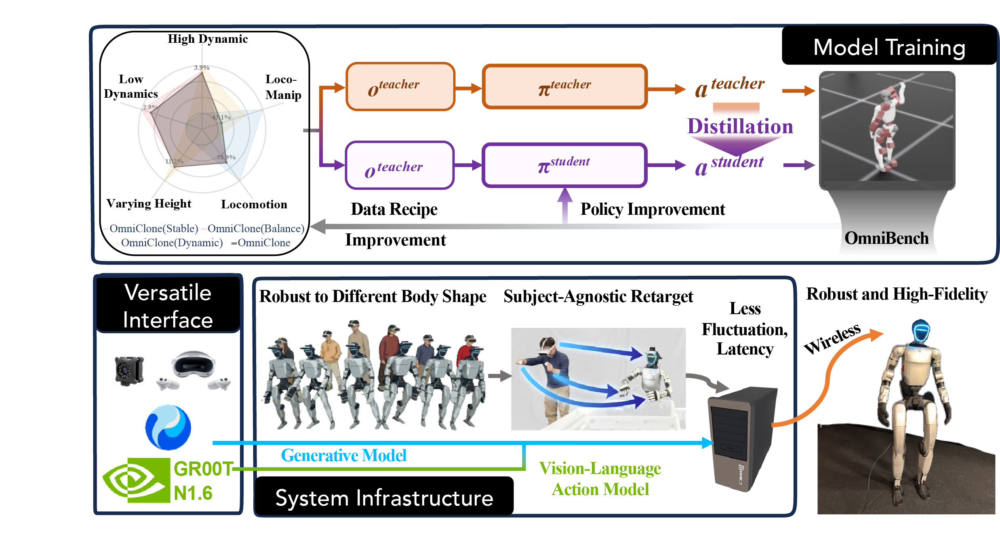

Diagnose by skill
Evaluate loco-manipulation, stationary manipulation, squatting, walking, running, and jumping on held-out generated motions.
A Robust, All-Around Whole-Body Humanoid Teleoperation System.
From agile movement to delicate manipulation. One tracking policy connects human motion, generated references, and autonomous execution.
Mean tracking error on OmniBench
Mean success rate on OmniBench
~82 GPU-hours for the tracking policy
Skill-level evaluation turns tracking failures into concrete choices of data and design.
Aggregate scores can hide a controller’s weaknesses. OmniBench evaluates six skills at three levels of workspace height or dynamic intensity, revealing where a policy needs to improve.
Explore OmniBench in the paperEvaluate loco-manipulation, stationary manipulation, squatting, walking, running, and jumping on held-out generated motions.
Use diagnostics and hardware observations to curate 30 hours of motion data, train a Transformer teacher, and distill a Transformer student.
Initial-frame scale calibration accommodates different operators. Buffered reference delivery handles irregular updates and interruptions.
65% and 78% lower mean tracking error than GMT and TWIST2 on OmniBench. Mean error is close to SONIC (39.8 vs. 38.9 mm), with a substantially smaller reported training budget.
Results are from simulation. SONIC retains higher overall success and advantages in walking and high jumps. See the paper for the full comparison and hardware evaluation.
Explore real-world teleoperation and generated-motion playback, all driven by the same whole-body tracking policy.
Coordinating locomotion, posture changes, and manipulation over a long-horizon interaction.
Dexterous interaction with deformable objects during bag unpacking.
Whole-body coordination during heavy door operation.
Coordinated bimanual control for pouring and liquid handling.
Generated running motions executed with the same tracking policy.
Forward jumping from a generated motion reference.
Generated jumps in place, without further policy training.
An additional view of dynamic motion execution.
Six operators, from 1.47 to 1.94 m tall, complete walking and object-placement tasks with automatic scale calibration and no per-operator policy retraining.
Choose an operator height to explore the demonstrations.
GR00T N1.6 is post-trained on 50 demonstrations collected with OmniClone. The same tracking policy supports both data collection and autonomous execution.
Hardware evaluation covers 26 trials across these two tasks. The VLA post-training compute is separate from the tracking-policy training budget.
Diagnostic evaluation, curated motion data, and a robust reference pipeline connect training to real-world control.

Live human motion, HY-Motion-1.0 generated references, or VLA commands.
Whole-body tracking with calibrated, buffered reference delivery.
Locomotion, manipulation, and changes in posture on a humanoid robot.
Read the full study and the supplementary implementation and evaluation details.